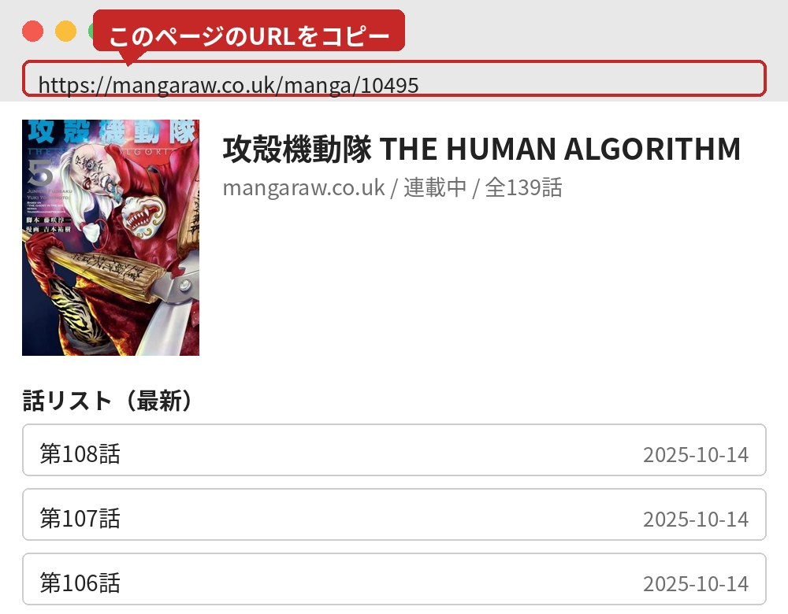
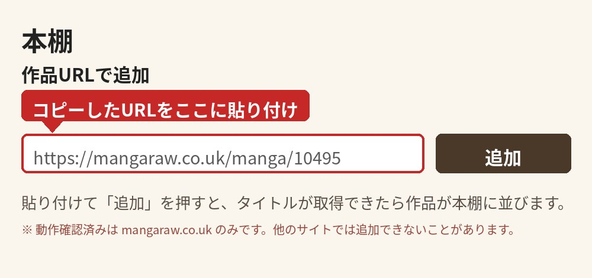

漫画本棚プロンプト（Muse用）
改訂版 3
Muse にこのプロンプトを渡すと、漫画の読書トラッカーと、それらを並べる共通の「本棚」スペースを作るための共通仕様です。既読・読書位置はサーバー側に保存され、スペース内リーダーでそのまま読めます。本棚がまだ無ければ、空の本棚から自動で作り始めます。
使い方（作品の追加のしかた）
動作確認済みの漫画サイトはこれです：https://mangaraw.co.uk/（動作確認はこのサイトのみです）
ステップ1：読みたい作品を選んで、その作品のトップページ（漫画ページ）を開き、アドレスバーのURLをコピーします。

ステップ2：本棚スペースのURL入力欄に、コピーしたURLを貼り付けて「追加」を押します。タイトルが取得できたら作品が追加されます。

コピーしました
漫画の読書トラッカーは、以下の仕様で作ること。 - 既読状態（どこまで読んだか）は端末ローカルではなくサーバー側にだけ保存し、別端末で開いても同じ状態が引き継がれるようにする。 - 開くたび・画面に戻るたび・一定間隔（30秒目安）でサーバーから最新状態を読み直し、「他の端末と同期」ボタンと最終同期時刻の表示も置く（開きっぱなしの画面が古い進捗を表示し続けないように）。 - 進捗カードには進捗％に加えて「最後に読んだ話」と読了時刻を表示する。 - 話はスペース内のリーダーで読めるようにする。ページ画像は話を開いたときだけ取得し、保存はしない（DB・ストレージに画像を残さない）。リーダーを閉じる／別の話へ移ると画像は破棄する。 - 最終ページまで読んだら、その話に自動で既読を付けて進捗に反映する。 - 話ごとに「何ページ目まで読んだか」（ページ位置と総ページ数）をサーバー側に保存し、開き直したら同じページに直行する。別端末でも引き継がれる。未読に戻したらページ位置はリセットする。 - ページ位置のシークバー（キンドル風スライダー）を置く。右→左方向（右綴じの本の進み方）で、ドラッグで任意ページへ移動できる。 - 話リストの各行には「途中まで読書中: N / M ページ」と再開位置を表示し、進捗カードの「続きを読む」は途中位置から再開する。 - レイアウトは縦画面（狭い画面向け）に固定する。画面表示の切替（手動／自動）は置かず、画面幅による自動切替もしない。本棚・トラッカー・リーダーの各画面に共通。 - リーダーは縦スクロール（ページを幅いっぱいに積む）が基本。表示モードで横スクロール（キンドル式の左右ページめくり。スワイプ／タップ／ボタン、右→左進行）を選んだ場合はページめくりで表示する。スワイプの方向は、左から右へのスワイプで次ページへ進み、右から左へのスワイプで前ページへ戻る（日本の漫画の右綴じ式）。タップも左側が次ページ、右側が前ページとする。見開きはレイアウト（縦画面固定）とは別の独立した設定として、リーダーに見開きのオン／オフ（サーバー側に保存）を置く。見開きオンのときは横スクロールで2ページを並べて表示し、オフのときは1ページずつ表示する。見開きを切り替えても、ページ位置は単一のページ番号のまま維持する。ページ表示は単一番号。既読の自動付与は最終ページの表示で判定する。 - リーダーの表示モードは、デフォルトを設定で選べるようにする（縦スクロール／横スクロール＝横スワイプのページめくり）。設定はサーバー側に保存し、端末が変わっても引き継ぐ。リーダー内でのその場の切替も可能にする。切替は表示だけの話で、保存されるページ位置（単一のページ番号）はそのまま維持し、切り替えても読んでいる場所を失わない。 - 話リストの行全体をタップ可能にし、行をタップしたらリーダーが開く（小さい「読む」ボタンは置かない）。タップしやすさを優先する。 - 既読チェック（丸ボタン）は行タップとは独立した操作として残す（行のタップ領域より手前に置き、チェック操作でリーダーが開かないようにする）。 - 行には話タイトル、公開日、既読なら読了日、NEWバッジ、途中位置を表示する。右端に › のような誘導記号を置いてよい。 - 余分なセクションは置かない: 「自分の記録」（ステータス／星評価／メモ欄）や、行の展開パネル（＋ボタン、話メモ、「この話まで既読」等）は不要なので作らない。残す操作は既読チェック、一括既読／未読、新着マーク消去、絞り込み（すべて／未読／既読）、並び順切替まで。 - トップページ（進捗カードの下など目につく場所）に「新着チェック（毎日）」のオン／オフ切替（スイッチ）を置く。設定はサーバー側にだけ保存し（メタ情報のフラグとして持つ）、端末が変わっても引き継がれる。初期値はオフ。切替の近くに、オン／オフそれぞれの状態で何が起きるかの説明文を出す。 - サーバー側に dailyNewCheck アクションを用意する。トグルがオフなら何もせず enabled=false で返す。オンなら手動チェックと同じ更新処理（出典から最新の話リストを取得して取り込む。既読状態・読書位置・トグル自体は上書きしない）を実行し、新着の件数と話タイトル一覧を返す。新しく取り込んだ話には NEW マークを付ける（初回取り込みのときは付けない）。 - 毎日の自動実行は、エージェント型の定期ジョブ（毎日1回、ユーザーのメインのチャットへ届くもの）で行い、dailyNewCheck を呼ぶ。ジョブ自体は常時有効でよく、オン／オフの判断はアクション側のトグルで行う。 - 通知は新着があったとき（新着件数 > 0）だけ送る。通知文には新着の件数と話タイトルを含める。新着がなければ通知しない（無言で終わる）。 - オフのときは自動チェックも通知もしない。手動の「最新話をチェック」ボタンはトグルの状態によらずいつでも使える。 - この共通仕様で作った作品は、共通の「本棚」スペースに並べる。新しいトラッカーを作ったら本棚にも登録し、一覧から各作品のトラッカーへ移動できるようにする。 - 本棚の作品タイトルリストには、各作品の「新着チェック（毎日）」トグルを置く。タイトルの横に新着チェックの状態を表すテキストやバッジは表示しない（状態はトグルのオン／オフだけで分かるようにする）。新着チェックは全作品トグル式に統一し、「毎日自動チェック」扱い（切り替え不可）の作品は作らない。もともと自動チェックだった作品は、トグル初期値オンで取り込む。 - 本棚の表示は各トラッカー側の設定と一致させる。トラッカー側でトグルを切り替えたら本棚の表示にも反映する（同期はエージェント側の定期ジョブ等で行ってよい）。 - 本棚には作品URLの入力欄を置き、読み込み（タイトル取得）に成功したら、その作品を本棚に追加できるようにする。 - このプロンプト（共通仕様）を読み込んだとき、本棚スペースがまだ無ければ、空の本棚スペースを作成する。 - 本棚を新規作成したときは、最初の作品として『攻殻機動隊 THE HUMAN ALGORITHM』（https://mangaraw.co.uk/manga/10495）を追加しておくこと。 - スペースは本棚一本だけにする。各作品のトラッカーは別スペースにせず、本棚スペースの中にネストした画面として持つ（本棚トップで作品を選ぶと、同じスペース内でその作品のトラッカー画面＝進捗・話リスト・リーダー・新着チェックを開く）。 - 本棚では新着チェックの状態確認だけでなく、各作品のオン／オフ切り替えもできるようにする。切り替えはトラッカー側の設定にも反映する。 - 本棚内には共通プロンプト全文を表示せず、コピーボタンも置かない。本棚のトップページには、この共通仕様を公開したGitHubページへのリンクボタンを置く（プロンプトをコピーするボタンは、そのGitHubページ側にだけ置く）。各作品（トラッカー）のスペース内には指示書セクションは置かない。 - 本棚は漫画読みの入り口として使う（今後はすべて本棚から作品を開いて読みに行く）。各作品の行から、その作品へ確実に開けるようにする。開き先は、トラッカーがある作品は出典ページではなくトラッカー（スペース内リーダーで読める方）を開く。トラッカーが無い作品だけ出典ページを開く。 - 作品タイトルは本棚だけに置き、各スペースに散りばめない（トラッカーの中に他作品のタイトル一覧などは置かない）。 - 各作品のトラッカー画面内には、その作品の出典ページ（出典サイトの作品トップページ）へのリンクを残すこと。